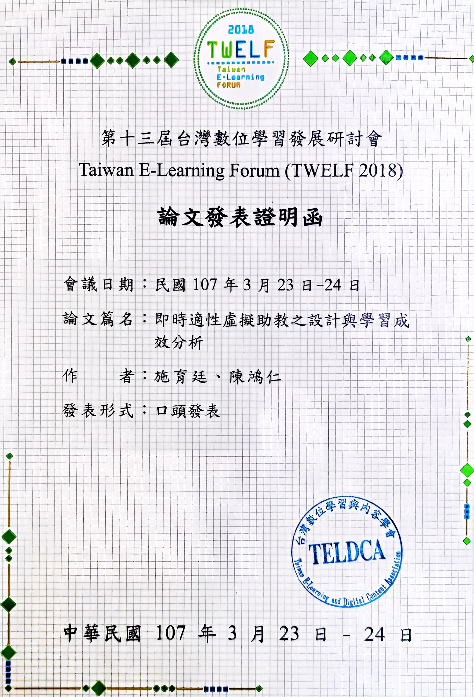

LINE Bot Course
Featured work: LINE cloud assistant and patent
Yu-Ting Shih (Andrew Shih) · Source-aligned course notes
LINE Bot Course
Yu-Ting Shih (Andrew Shih) · Source-aligned course notes
Showcase
This page brings together Yu-Ting Shih’s patent certificate and the author-provided demonstration playlist. Use the videos to explore application examples, then return to the course for the underlying GAS, Sheets and Gemini learning steps.
If embedding is unavailable, use the playlist link. “Zero cost” is part of the supplied playlist title, not a guarantee that every service or usage level is free; API pricing and quotas apply.
Patent I918530

SYSTEM AND METHOD FOR MULTI-SOURCE INFORMATION INTEGRATION AND AUTOMATED CONTENT GENERATION BASED ON CONVERSATIONAL INTERFACE
Certificate details are transcribed from the image. This page does not assess current legal status or claim coverage of every video feature; consult the official record and patent claims.